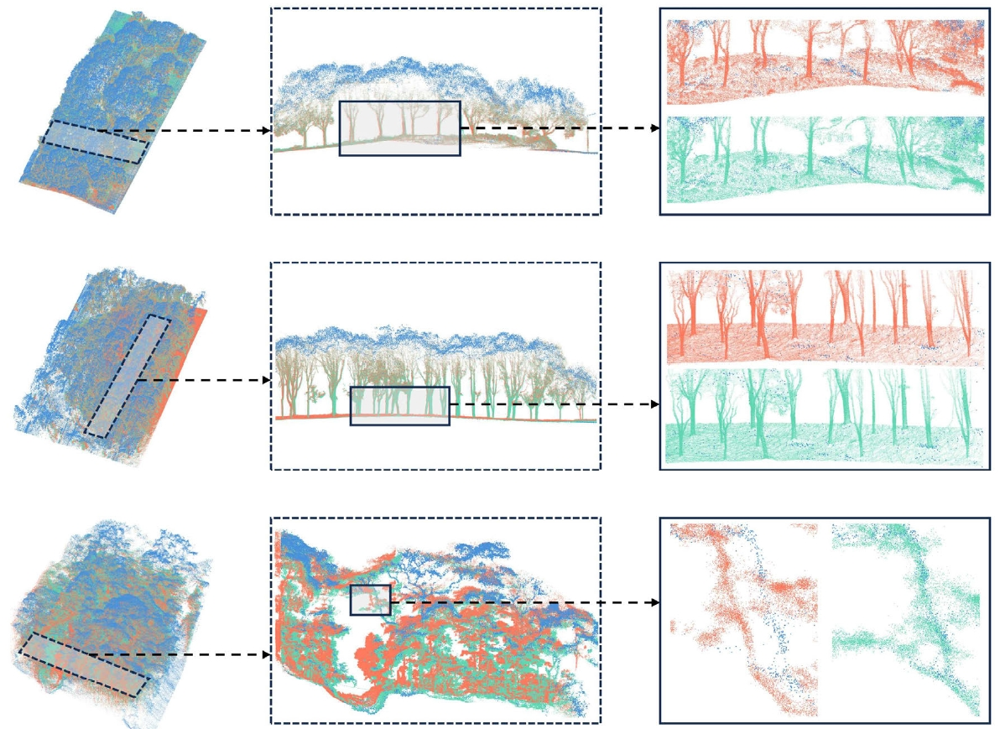
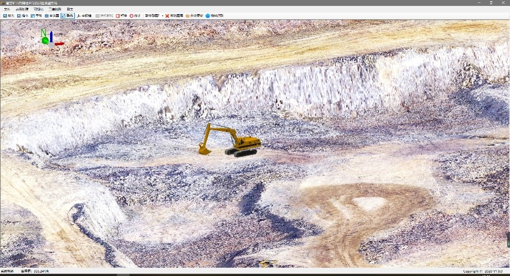

欢迎来到我的个人网页!
吴宾
个人简介
中山大学测绘科学与技术学院“百人计划”副教授。聚焦城市三维地理计算与人居环境应用，从事多源激光雷达信息提取、三维建模与应用、城市遥感（夜间灯光遥感）等方向的研究工作。先后主持了包括国家自然科学基金项目、广东省自然科学基金面上项目、上海市青年科技英才扬帆计划项目、中国博士后科学基金特别资助等国家级和省部级项目多项，已在RSE、ISPRS P&RS、IJGIS等国内外遥感和GIS顶级专业期刊发表学术论文50余篇，3篇ESI前1%高被引论文，Google Scholar引用次数超2000次。
研究方向
激光雷达遥感
多源激光雷达（星载、机载、车载、地基）数据处理与信息提取，如点云配准、建筑和行道树提取等。
三维信息应用
重点关注智慧城市与可持续发展，人居环境三维信息表征与评价，例如三维可视率、绿视率、环境暴露等。
夜间灯光遥感
可持续发展卫星SDGSAT-1微光数据、NPP/VIIRS、DMSP/OLS等夜间灯光数据处理与信息挖掘。
地理信息科学
GIS开发、空间认知、时空对象、时空分析，重点关注基于事件和时空对象的时空演变分析以及二三维系统开发。
部分成果
行道树提取
提出了邻域竞争搜索算法，实现车载点云中单株行道树的高精度提取 （RS 2013， JAG 2016）。
More

点云配准
提出了逐步最小生成树配准算法，解决了车载点云与背包点云的数据配准 (IEEE TGRS 2022;IEEE TGRS 2024)。
More
三维可视性
建立了三维可视性计算模型，利用点云对城市街道空间品质进行了精细测度 （GRS 2020, BAE 2021）。
More
城市道路提取
提出了一种基于地形骨架的城市主要道路提取新方法，首次系统证明了国产SDGSAT-1夜光数据在道路提取以及道路照明设施评估中的巨大潜力 (RSE 2024)。
More
建筑楼层灯光暴露
利用SDGSAT-1夜光遥感数据，精细分析建筑物楼层夜光暴露程度 (ISPRS 2025)。
More

二三维GIS系统开发
开发了多个二、三维GIS系统，巷道建模与管理系统、智慧矿山系统、隧道电缆三维管理系统以及中大测绘实景三维集成系统。
More
网页导览
个人主页
学术论文
教学服务
成果展示
三维建筑灯光暴露
(New!)
大范围建筑高度制图
道路驾驶三维视野计算
基于三维地形的道路提取
联系方式
欢迎对我研究方向感兴趣的老师与同学们与我取得联系。
wubin65@mail.sysu.edu.cn
广东省珠海市唐家湾中山大学珠海校区瀚林三号E区测绘科学与技术学院